微生物检测文献精读 · BL0028
活菌的早期检测与分类
Early detection and classification of live bacteria using time-lapse coherent imaging and deep learning
时序相干成像与深度学习
Wang 等 · Light: Science & Applications 9, 118 · 2020
BL0028 · 面向微生物检测 introduction 与光学仪器研究
微生物检测文献精读 · BL0028
Early detection and classification of live bacteria using time-lapse coherent imaging and deep learning
时序相干成像与深度学习
Wang 等 · Light: Science & Applications 9, 118 · 2020
BL0028 · 面向微生物检测 introduction 与光学仪器研究
活菌生长、全息图、时间信息
拼接、角谱传播、复场差分
检测/分类网络、训练与独立盲测
全部主图、补充图表、时间与回收率
通量假设、可迁移思路、未证明事项
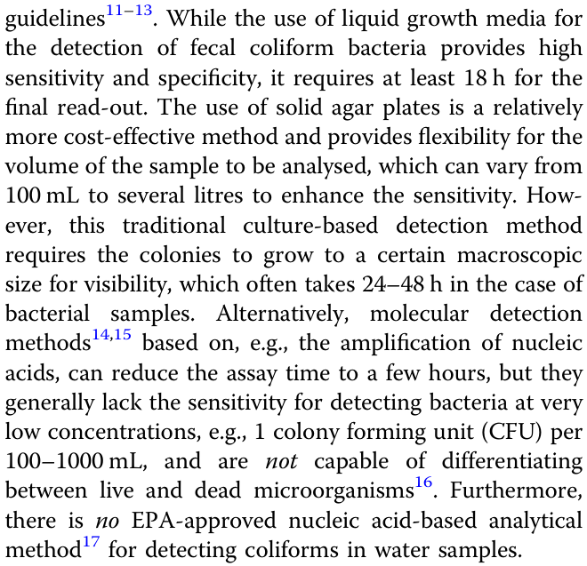
论文面对大体积、低浓度水样：传统平板计数要等菌落长到可见大小，文中以约24–48 h作背景。
目标信号是随时间出现并生长的菌落形态；输出为位置、计数及三类菌的类别。
这是2020年论文的背景判断，不把当年的审批状态当作当前法规结论。
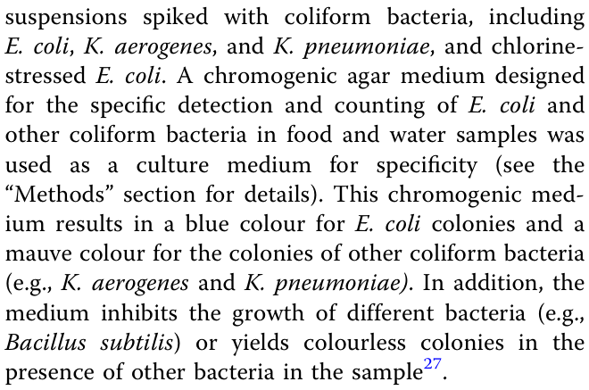
验证对象为加标水样中的 E. coli、K. aerogenes、K. pneumoniae，并考察受氯应激的 E. coli。
生长介质本身带有选择性；不能把三类分类器视为任意微生物识别器。
本讲解分析光学测量与证据，不把样品处理图转换为培养或病原操作教程。
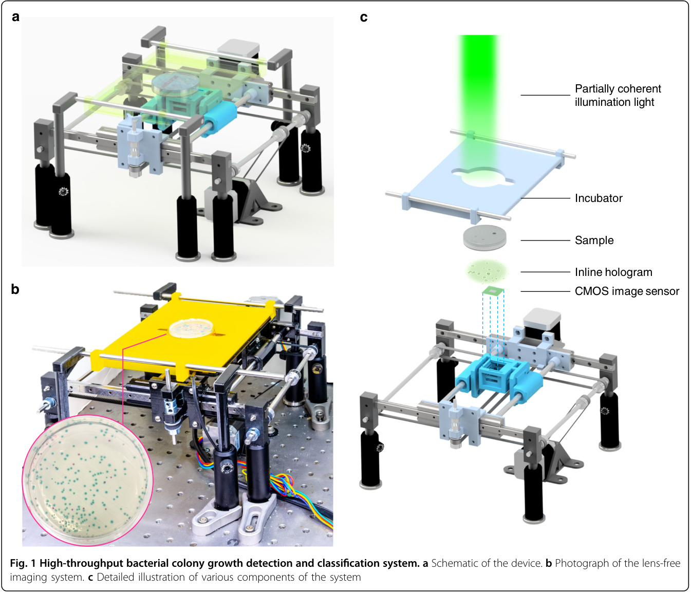
a 机械与光学示意；b 实物；c 从照明、样品到传感器的光路。以下分别放大。
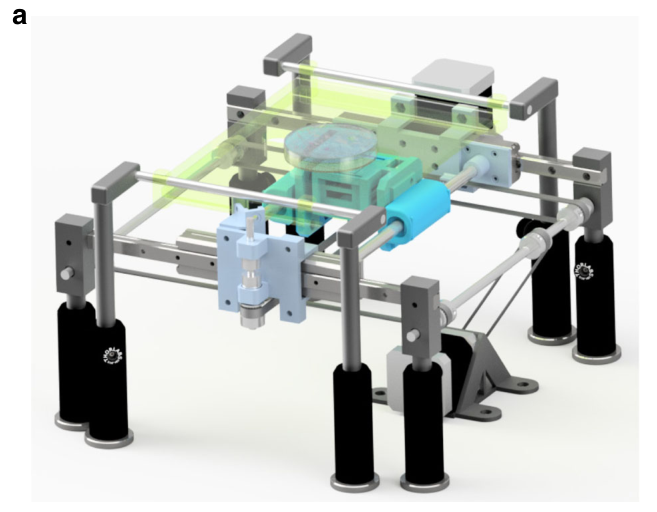
Fig.1a 显示二维移动机构。小传感器逐位置采集，软件把重叠图块拼成大视场。
输入是多个局部全息强度图；输出是同一时点的整板图像。
扫描并不增加单帧分辨率。扩大视场还要付出移动、曝光、传输与拼接时间。
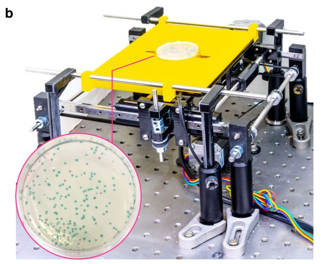
Fig.1b 表明装置与平板的机械组合，插图是培养后宏观平板。
物理平板直径60 mm；后续真值计数仅使用中央50 mm圆，避开弯曲边缘伪影。
因此“扫描整板”与“经过验证的计数区域”应分别记录。
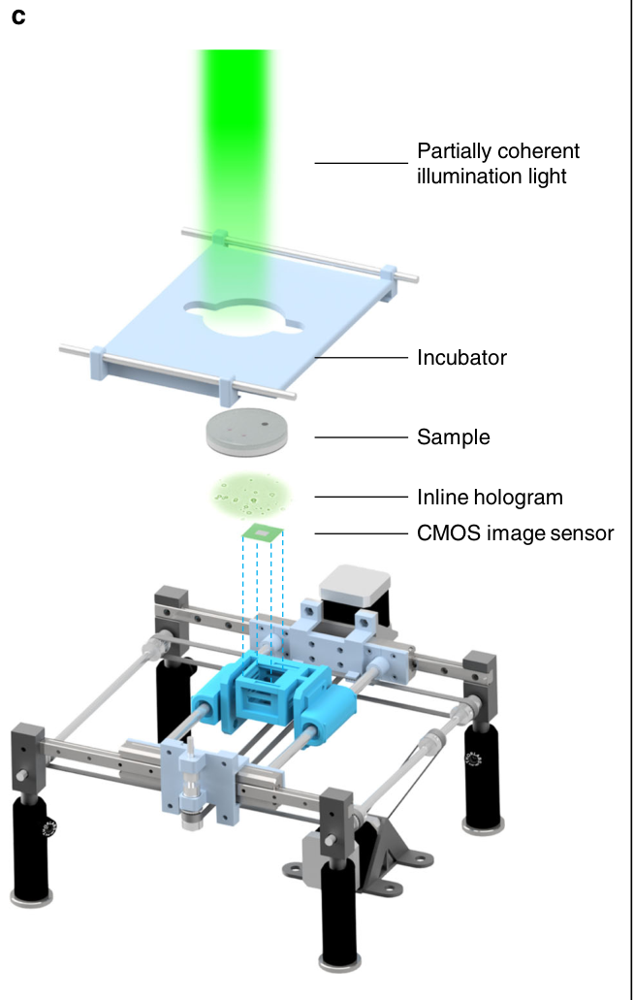
部分相干光穿过样品；未散射参考光与散射光在CMOS上叠加，形成同轴全息强度图。
传感器记录 I=|R+O|²，其中R为参考场、O为物场。复振幅和相位并非各自直接测得。
数字回传给出复数重建；输入传感器强度与输出重建相位不能混称。
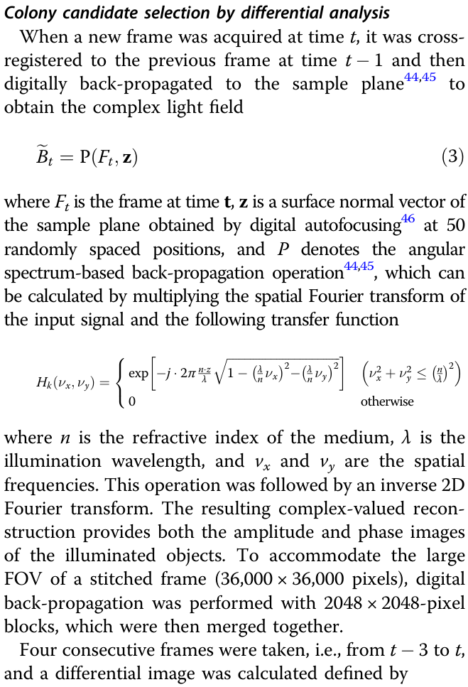
教学解释：I=|R|²+R*O+RO*+|O|²。若物场相对参考场较弱，|O|²项较小，交叉项携带结构信息。
单幅强度不足以唯一确定任意复场；同轴结构仍可能存在孪生像与背景伪影。
作者实现角谱回传与数字聚焦，并未在本文实现多高度迭代相位恢复。上述展开是物理解释，不是新增实测结果。
式(3)：B̃ₜ=P(Fₜ,z)。先对配准后的整帧Fₜ做二维FFT，在频域乘H，再作IFFT。
H的指数给不同空间频率施加传播相位；超出传播频率圆的分量置零。
输出B̃ₜ为复数图，分为幅度|B̃ₜ|与相位arg(B̃ₜ)，供时间差分和网络使用。
n为介质折射率；λ为照明波长；νₓ、νᵧ为空间频率。λ与传播距离同长度单位，ν为逆长度，n无量纲。
作者在50个随机位置数字聚焦得到表面参数；36,000×36,000像素整帧分成2048×2048块回传。
分块缓解计算量；块间拼接、错误z、边界与介质不均匀仍可能产生伪影。相位不能直接解释成单细胞质量。
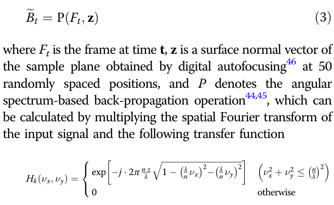
P通过频域传播核H作用于输入。指数含−j、2π、n·z/λ以及空间频率相关根号项；j是虚数单位。
条件νₓ²+νᵧ²≤(n/λ)²定义传播波频率区域，区域外在作者实现中置零。
负号对应本文回传播约定。相机强度起点、数字聚焦与弱物体限制仍按前页条件解释。
非实测：取局部平面、标量传播距离z的教学近似。原文将z描述为表面法向向量，本例不替其给出真实几何。
设n=1、λ=0.532 μm、z=λ/2，νₓ=0.6/λ、νᵧ=0。根号项√(1−0.6²)=0.8，频率在传播区域内，但超过本机像素采样频带，详见下一页。
H=exp(−j·2π·0.5·0.8)≈−0.809−0.588j。输入频谱系数1+0j，输出同H：幅值1，相位−0.8π；再IFFT得到该空间模式。
上页仅演示连续传播模型。其νₓ≈1.128 μm⁻¹；本文像素间距p=1.67 μm，对应Nyquist频率1/(2p)≈0.299 μm⁻¹。上例不能当本机直接采到的细节。
在带内的教学例：νₓ=νᵧ=0，n=1，取z=λ/4=0.133 μm，则H=exp(−jπ/2)=−j。单位频谱系数变为−j，幅值仍为1。
传播波截止和传感器采样截止不同；数字回传不会自动恢复未采集的高频。此处z仍为局部平面标量教学距离，非实测样品厚度。
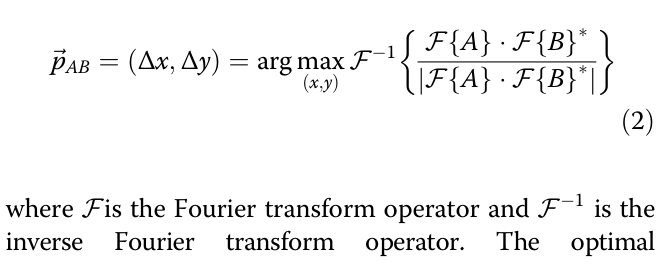
式(2)以两块重叠图A、B为输入：FFT后做一个频谱乘另一个的共轭，再除以模长。
IFFT把一致的平移相位变成相关峰；最大值的位置给出Δx、Δy，单位为像素。
归一化减弱整体幅值差影响，但无纹理、重复纹理、低信噪比或非平移变形仍会使峰不可信。
教学算例，非原文测量。令A=[0,1,0,0]，B=[0,0,1,0]，B比A向右移1格。
取式(2)的F(A)F(B)*归一化并IFFT，得到[0,0,0,1]。峰索引3在循环坐标表示−1。
因此把B向左平移1像素即可对齐A。若交换A/B，位移符号反转；实现必须统一“谁对齐谁”。
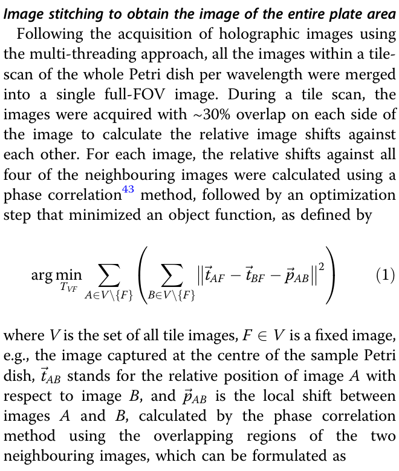
式(1)把每块相对固定参考F的位置作为未知量，最小化所有邻块位移残差平方和。
局部p_AB来自相位相关；全局t_AF是优化后的位置。固定参考消除整体平移，须有连通图及锚点关联边或等效绝对约束。
作者剔除相关系数<0.3的局部位移，随后线性融合，整帧均值归一到50并存为8-bit。
印刷式两重求和均排除F；若仅含这些差值，非F位置共同平移不改残差。此处不推断作者实现。
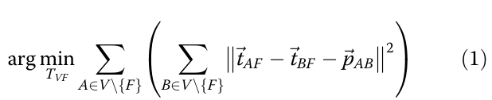
教学算例，非测量。固定x_A=0；估计B−A=100、C−B=100、C−A=203像素。
最小化(b−100)²+(c−b−100)²+(c−203)²。求导得2b−c=0、2c−b=303。
解b=101、c=202像素。残差为1、1、−1，总平方误差3；逐块累积b=100、c=200则误差9。
本例图连通，B−A、C−A显式连接锚点A；这是可唯一求解的教学约束，并非按印刷式(1)求和范围逐字代入。
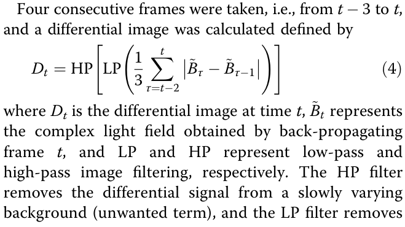
式(4)使用t−3至t共四幅复场，先算三个相邻复场差的模，再取平均。
计算次序：复数相减→取绝对值→三项平均→LP低通→HP高通。不是原始强度相减，也不是先对相位单独求导。
LP抑制高频噪声；HP压制缓变空间背景。变化还可能来自气泡和表面运动，因此后续需要检测网络。
教学算例，非实测。某像素四帧为1、1+i、1+2i、2+2i，单位采用归一化场幅。
三个复数差依次i、i、1；模均为1，滤波前平均=1。
对应强度为1、2、5、8，强度差平均=(1+3+3)/3=7/3，数值不同。单像素例不能计算空间LP/HP；滤波还需邻域。
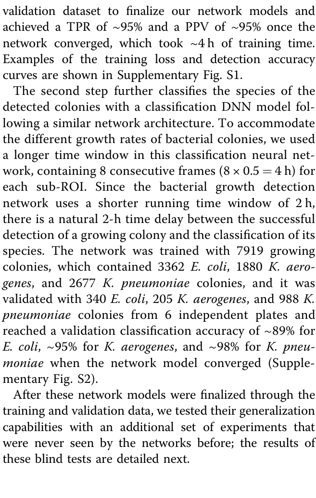
采集间隔为30 min。作者称4帧窗口“2 h”、8帧窗口“4 h”，沿用帧数×周期的窗口命名。
四个采样时刻首尾实际相隔3×0.5=1.5 h；八帧首尾相隔7×0.5=3.5 h。
分类比检测多4帧，即再等待2 h。写时间边界时应区分采样数、首尾跨度与首次可输出的时刻。
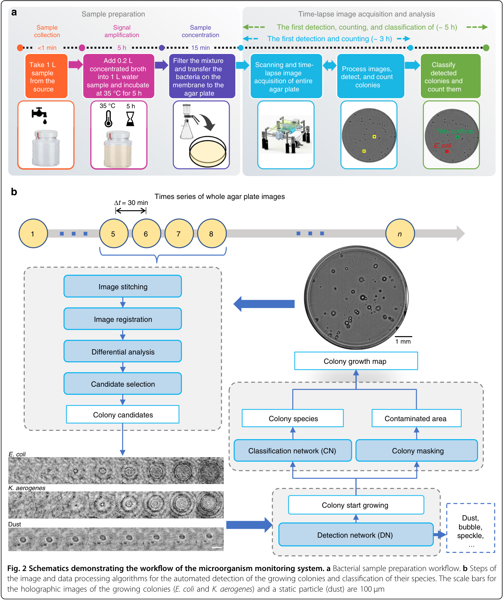
a 显示样品到输出的时间链；b 显示先找增长、再分类的处理链。原图只作研究解释，不作操作指南。
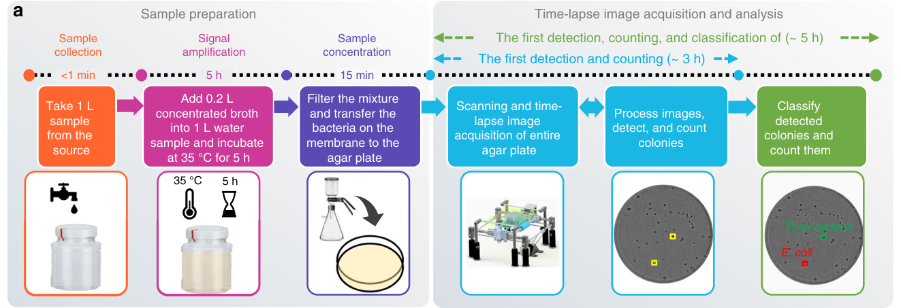
Fig.2a把液相预培养、浓缩/转移、扫描与判断串在一起；约1 CFU/L、≤9 h的结果依赖预培养。
图中“首次检测”与“首次检测并分类”分别在成像后约3 h和约5 h，并非所有菌落均已检出。
样品环节改变可检测CFU数量与回收率；不能把总时间写成纯算法运行时间。
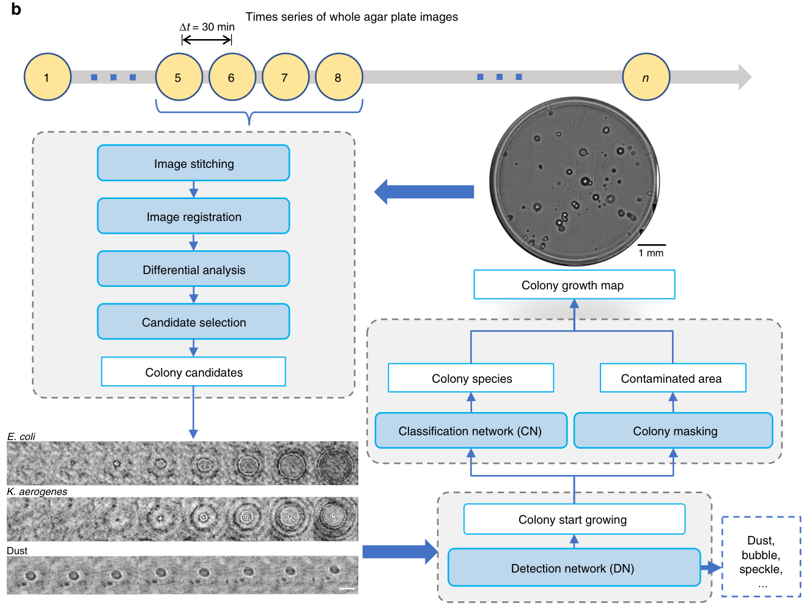
差分候选包含菌落与动态杂质。检测网络先筛选，分类网络再处理已检出的菌落；漏检不进入分类。
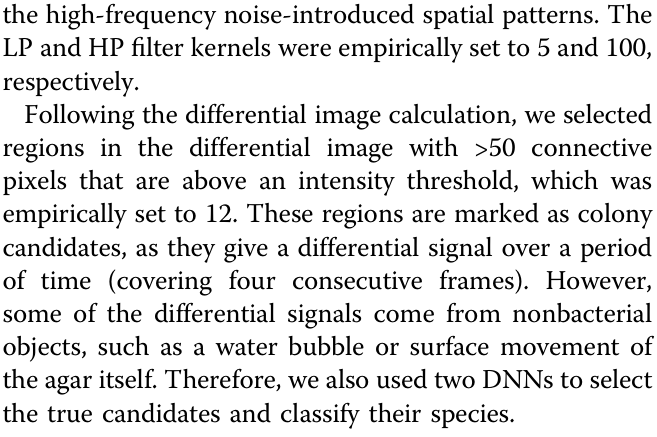
拼接与跨时刻配准在差分之前；否则整个背景的移动也会形成变化。
作者在差分图中用强度阈值12与>50连通像素选候选，LP/HP核分别设为5/100。
这些是该数据链上的经验参数，依赖归一化和采样尺度，不是通用菌落的物理阈值。
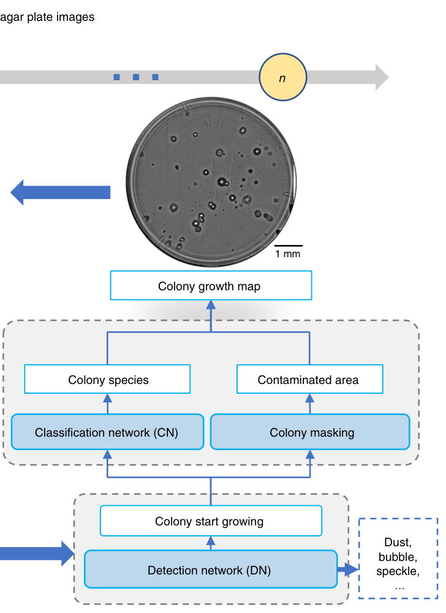
检测网络回答候选是否为生长菌落，排除灰尘、气泡、散斑等。
分类网络只接收已检测菌落，给出三个已知类别之一；掩膜与类别共同形成生长图。
检测阳性分数不是物种概率；闭集分类也没有在本文验证“未知种拒绝”能力。
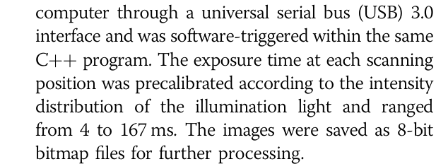
传感器像素1.67 μm、有效面积6.4×4.6 mm²；论文采集用532 nm照明。
曝光按位置预标定，范围4–167 ms；传感器和照明均受程序控制。
曝光时间影响动态范围/信噪比，像素间距与重建共同限制可见细节；不能由“无透镜”推出无限分辨率。
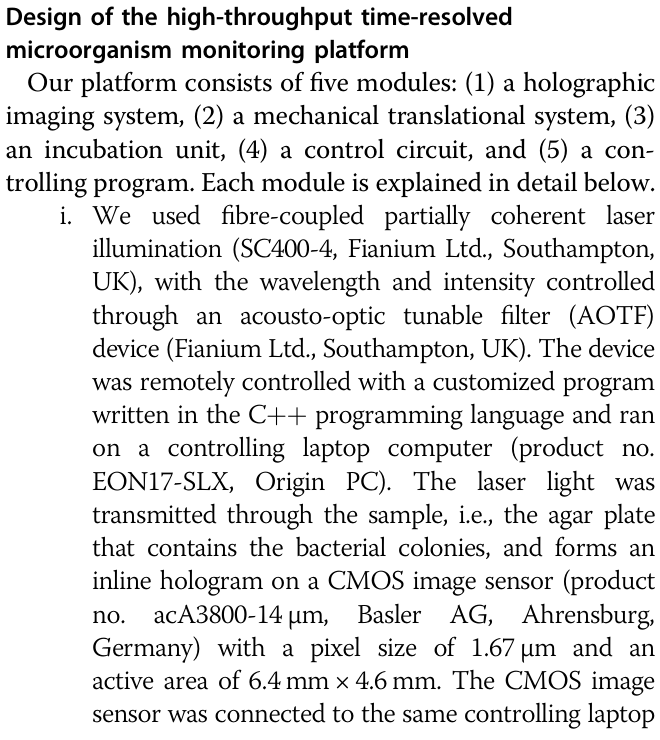
原文设备模块明确给出1.67 μm像素和6.4×4.6 mm²有效面积；单图原生覆盖约29.4 mm²。
光经过样品后在传感器上形成同轴全息图。照明与扫描由程序同步，影像先缓冲再写盘。
模块实现提供的是测量结构，不是以设备清单替代分辨率、信噪比或回收率的验证。
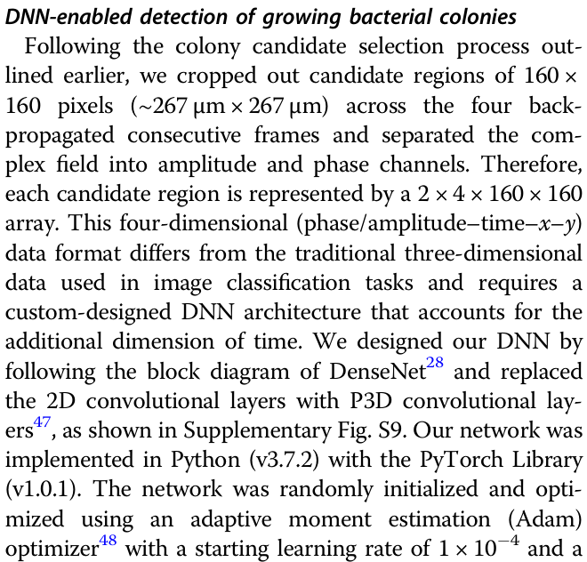
每个候选从四帧截取160×160像素，约267×267 μm²；分成幅度与相位两通道。
输入为2×4×160×160：通道×时间×x×y，共204,800个标量。
空间旋转/翻转用于增强，不改变时间顺序。该张量描述菌落邻域，并非单个细菌的直接图像。
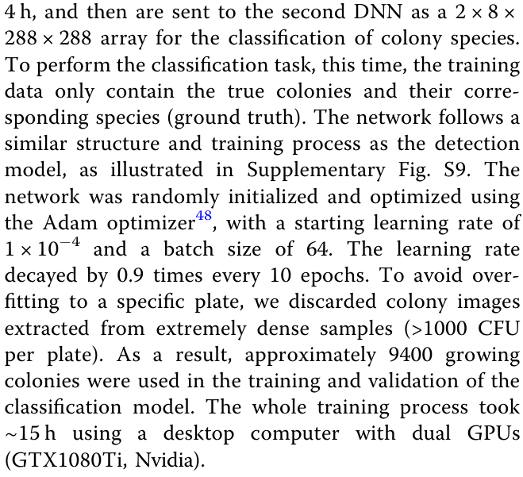
对已检出菌落再等2 h，积累8帧；输入为2×8×288×288。
较大空间邻域和较长时间窗可包含增长形态差异。作者排除了>1000 CFU/plate极密集板的分类训练图。
这会限制对拥挤、重叠菌落的外推；模型未因输入更大就自动具备未知菌种泛化。
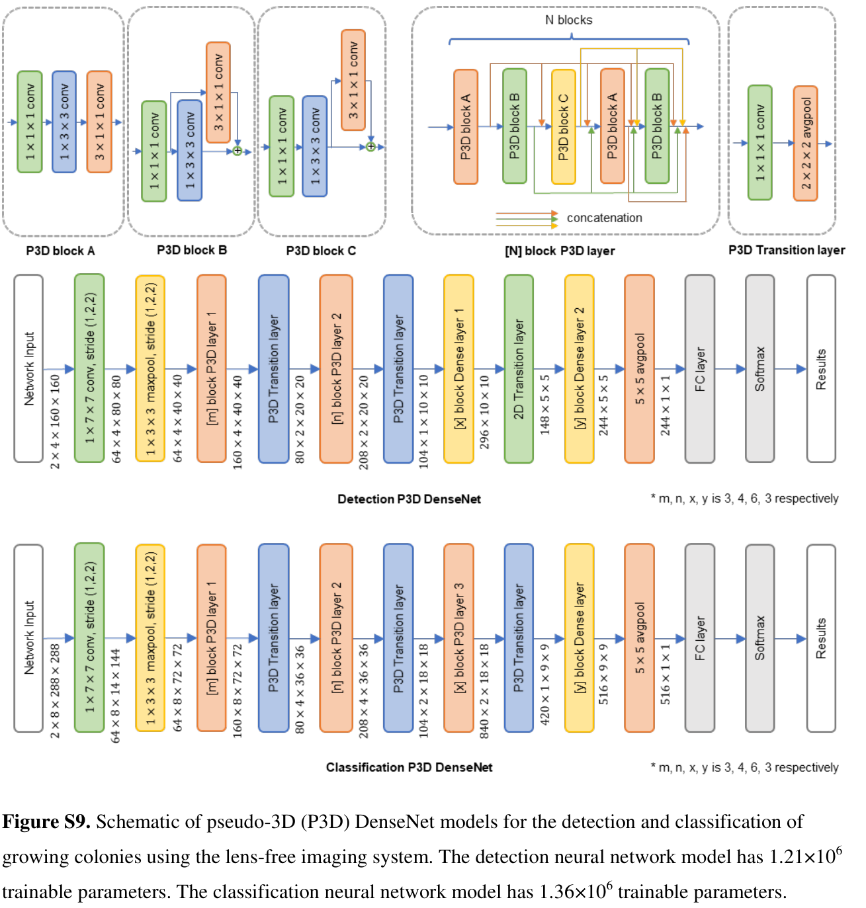
上部是复用模块；中部检测网络；下部分类网络。参数量分别1.21×10⁶与1.36×10⁶。
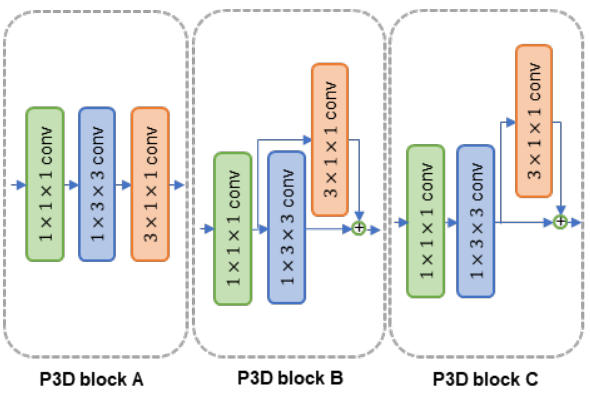
P3D将空间与时间卷积分开：1×3×3处理空间，3×1×1处理时间，1×1×1用于通道变换。
A空间后时间串联；B空间/时间并行相加；C将空间输出与其后时间卷积输出相加。加号为逐元素融合。
这是时空特征学习，不等同于手工计算“生长速率”。图仅给结构，不能据此声称获得可解释生物机制。
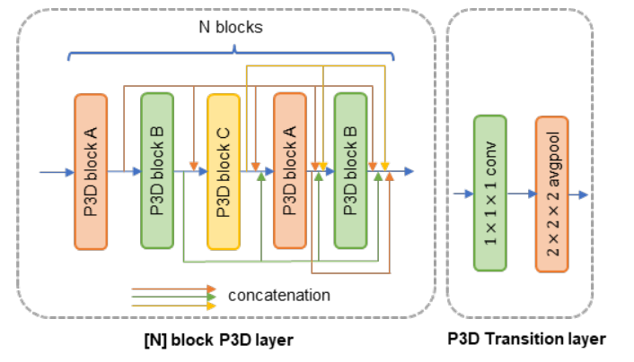
Dense层把多个先前模块特征拼接到后续输入，图中彩色连接表示concatenation。
过渡层含1×1×1卷积和平均池化，改变通道量并压缩时空尺寸。
拼接与相加不是同一种操作：拼接增加通道维，相加要求对应张量形状一致。
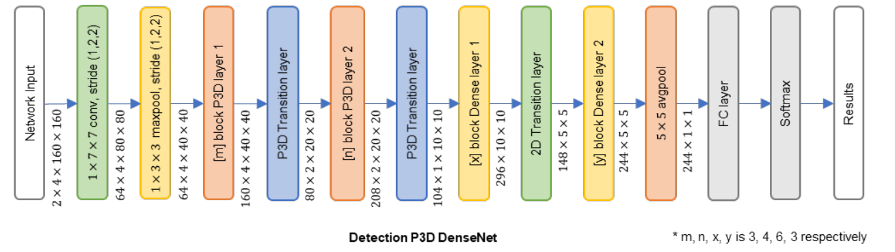
由4帧输入，经P3D层/过渡层到全局平均池化、全连接及softmax。按原图保留每层尺寸。
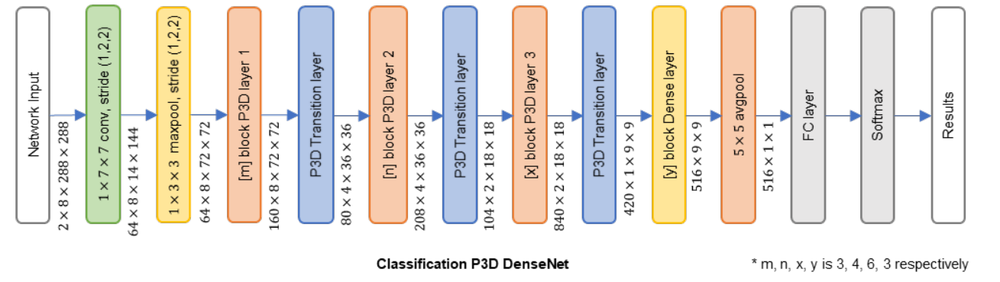
8帧输入具有更多空间/时间样本；参数与层链独立于检测网络，不共享一个性能指标。
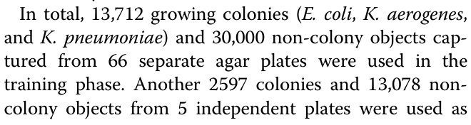
检测训练：66板、13,712菌落、30,000非菌落。验证：另5板、2,597菌落、13,078非菌落。
合计71板、16,309菌落与43,078非菌落，方法节以约16,000/43,000概述。
独立盲测另15板，未用于训练/验证。菌落与图像不是独立菌株，不能把数万图像说成数万生物学重复。
分类训练7,919菌落：E. coli 3,362、K. aerogenes 1,880、K. pneumoniae 2,677。
验证来自6板：340、205、988；合计1,533，训练加验证9,452，方法节约写9,400。
最优检测模型按验证表现选取。检测/分类数据集不同，不能套用同一分母或把验证曲线称为独立测试。
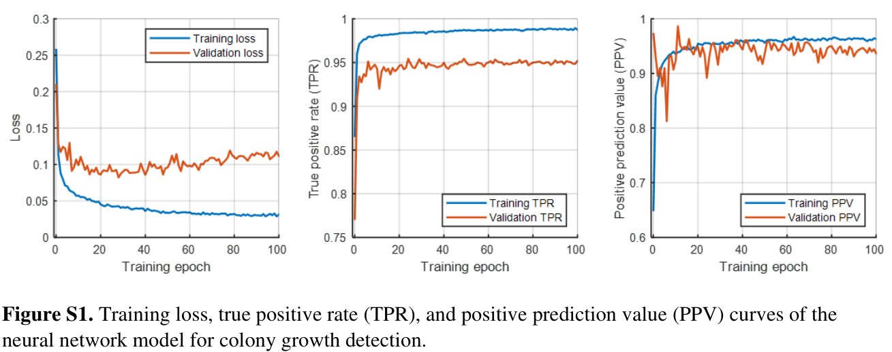
三图依次是loss、TPR、PPV；蓝为训练，橙为验证。以下逐图解释。
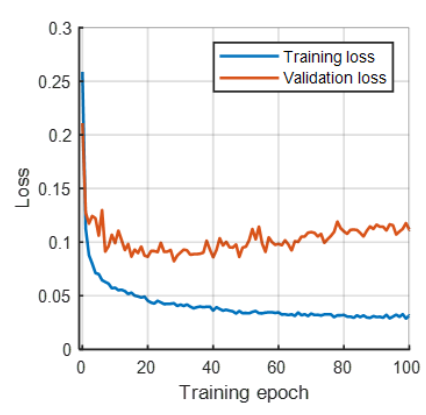
训练loss下降，验证loss早期下降后波动且后段有回升。
这表明拟合训练数据继续改善时，验证表现未同步改善；应根据验证集选择模型。
图未提供各epoch重复训练置信区间。不能把曲线平滑或低loss当作跨实验泛化证明。
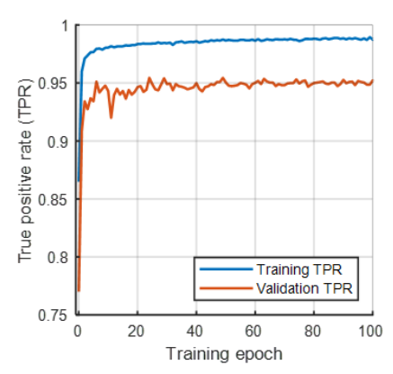
TPR衡量真菌落被模型判阳性的比例，验证曲线约稳定在95%，训练更高。
这里属于训练/验证数据中的候选判别；与Fig.4按24 h全部菌落作分母的整系统时序灵敏度不同。
阈值和候选筛选会改变曲线，不能把该95%移作任意时间的检出率。
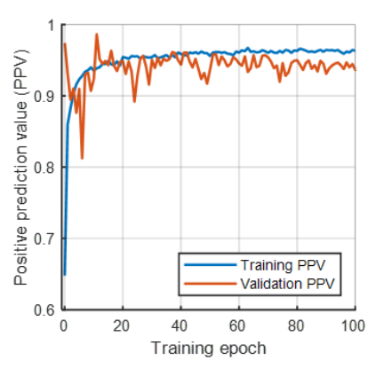
PPV为预测阳性中真菌落的比例，图示训练与验证约95%左右的水平。
它依赖假阳性数量与正例基率。真实低浓度样品即使只多一个假阳性，也可能明显降低PPV。
因此作者在盲测前把检测阈值调高到0.99以优先减少假阳性。
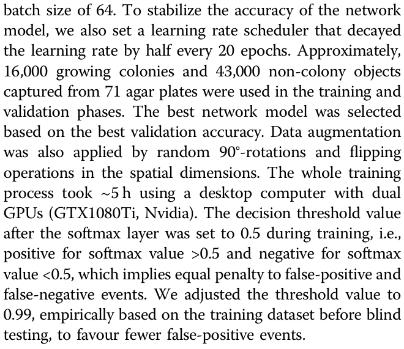
训练阶段softmax分界为0.5；作者在独立盲测前，根据训练数据经验地改为0.99。
提高阈值使阳性判定更严格，一般会权衡漏检与误报；不是概率被校准成99%可靠。
本研究未报告跨实验室校准、预注册阈值选择或完整阈值敏感性曲线。
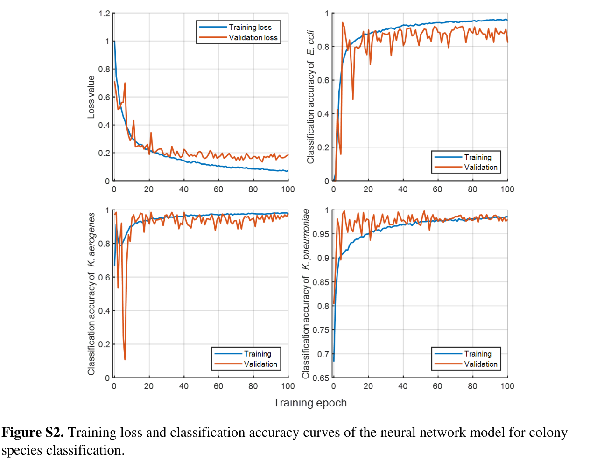
左上loss，另三图为各类准确率；训练与验证表现不能替代Fig.5独立盲测。
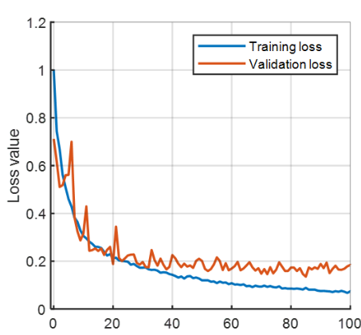
分类训练loss持续下降；验证loss下降后约稳定，仍高于训练曲线。
损失汇总多类样本；每类样本量不同，须结合三个类别曲线阅读。
图未报告多随机种子训练分布，不应从单条训练轨迹推出所有训练可重复性。
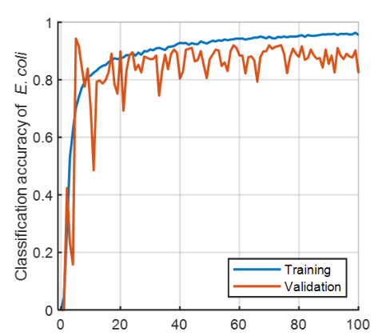
正文概述模型收敛时E. coli验证分类准确率为约89%；图保留各epoch训练/验证波动。
横轴为训练epoch，不是培养时间；纵轴为类别识别准确率。
这些数字不包含检测前级漏掉的菌落，也不代表原始水样的浓度检出限。
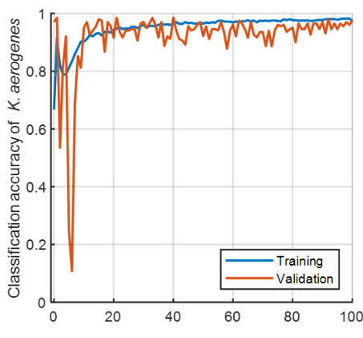
正文概述模型收敛时K. aerogenes验证分类准确率为约95%；图保留各epoch训练/验证波动。
横轴为训练epoch，不是培养时间；纵轴为类别识别准确率。
这些数字不包含检测前级漏掉的菌落，也不代表原始水样的浓度检出限。
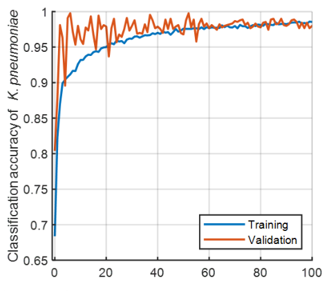
正文概述模型收敛时K. pneumoniae验证分类准确率为约98%；图保留各epoch训练/验证波动。
横轴为训练epoch，不是培养时间；纵轴为类别识别准确率。
这些数字不包含检测前级漏掉的菌落，也不代表原始水样的浓度检出限。
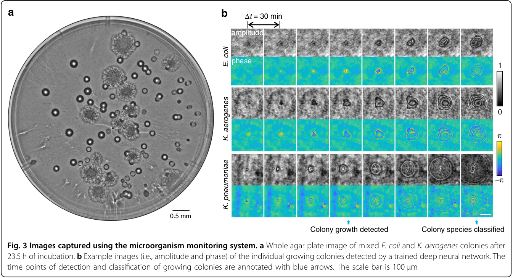
a 给出大视场定位；b 给出幅度/相位的连续观察。蓝箭头区分检测时刻与分类时刻。
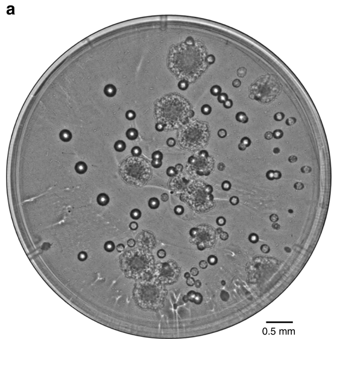
图为混有E. coli与K. aerogenes的平板，培养23.5 h的成像结果。
全图用于定位菌落和杂质，标尺0.5 mm；局部形态需要放大后判断。
这是一张成像示例，不是另外一套独立混合菌样本量或任意复杂水样的分类验证。
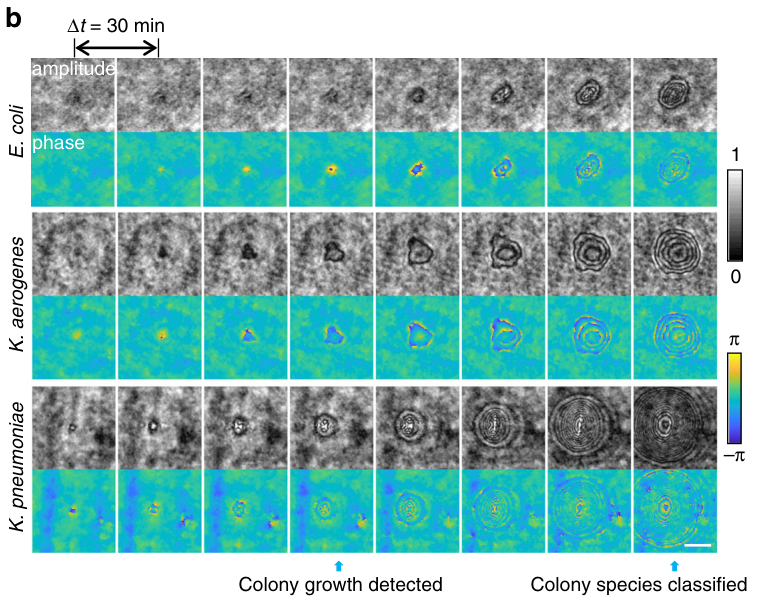
三种菌各有幅度与相位行，Δt=30 min；幅度显示0–1，相位色标−π至π，标尺100 μm。
E. coli这一行显示同一菌落邻域随时间变化；相位与幅度各提供一组特征。本例相位行由小亮点逐步变为带环结构；对应幅度后几帧也出现环纹。
蓝箭头所在时间标志由检测/分类模型给出，分类需要比检测更长的观察窗。
环状衍射纹理不等于细菌细胞轮廓。该图不能单独证明两通道性能贡献，也不能据此归纳物种普遍形态或生长速率。
K. aerogenes这一行显示同一菌落邻域随时间变化；相位与幅度各提供一组特征。本例中段幅度图出现不规则暗边，后段环状结构更清楚；相位行也逐步扩成环纹。
蓝箭头所在时间标志由检测/分类模型给出，分类需要比检测更长的观察窗。
环状衍射纹理不等于细菌细胞轮廓。该图不能单独证明两通道性能贡献，也不能据此归纳物种普遍形态或生长速率。
K. pneumoniae这一行显示同一菌落邻域随时间变化；相位与幅度各提供一组特征。本例最后两帧的多圈环纹占据图块较大部分，末帧纹理接近截取边界；需注意ROI大小。
蓝箭头所在时间标志由检测/分类模型给出，分类需要比检测更长的观察窗。
环状衍射纹理不等于细菌细胞轮廓。该图不能单独证明两通道性能贡献，也不能据此归纳物种普遍形态或生长速率。
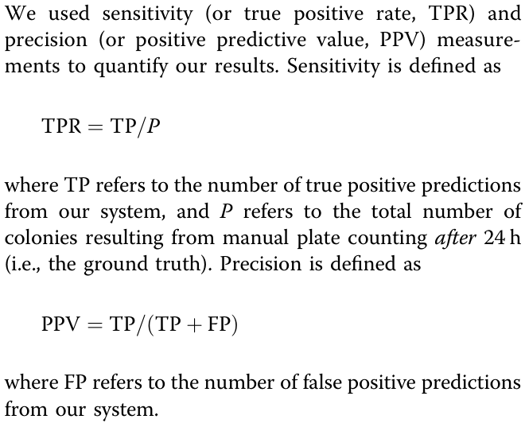
TPR=TP/P。P是24 h人工平板计数得到的菌落总数，TP是早期被正确检出的数量。
PPV=TP/(TP+FP)。FP是被误报为菌落的对象；PPV描述阳性结果中有多少是真的。
早期尚未开始可见生长的菌落也在P中，所以TPR同时包含生物学延迟与成像/算法漏检。
教学算例，非实测：终点P=100，早期TP=80、FP=2。
TPR=80/100=80%；PPV=80/82≈97.6%。两者不能合并写成“准确率97.6%”。
若早期只有TP=1而FP仍为2，PPV=1/3≈33.3%。低基率会放大每个假阳性的影响。
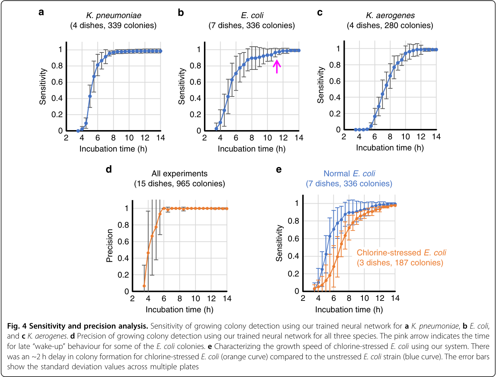
a–c为分种灵敏度，d为总体精确率，e为应激与常规E. coli比较；误差棒为跨板标准差。
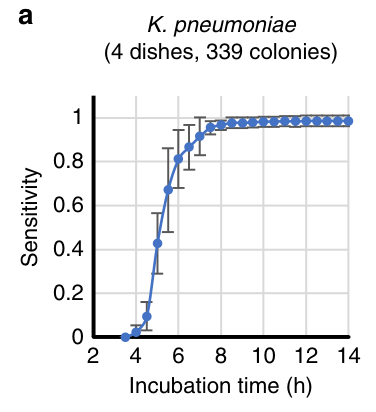
该组4板，339菌落。横轴为培养时间h，纵轴为对24 h终点计数的检出比例；约6.0 h达到约80%。
每个时点汇总重复板，误差棒为标准差而非95%置信区间。
曲线差异包含种间生长延迟。E. coli还出现较晚“苏醒”的少数菌落；不能把平台检测阈值当作唯一原因。
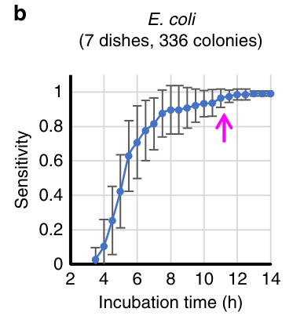
该组7板，336菌落。横轴为培养时间h，纵轴为对24 h终点计数的检出比例；约6.8 h达到约80%。
每个时点汇总重复板，误差棒为标准差而非95%置信区间。
曲线差异包含种间生长延迟。E. coli还出现较晚“苏醒”的少数菌落；不能把平台检测阈值当作唯一原因。
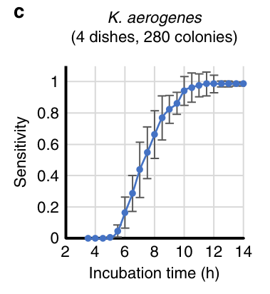
该组4板，280菌落。横轴为培养时间h，纵轴为对24 h终点计数的检出比例；约8.8 h达到约80%。
每个时点汇总重复板，误差棒为标准差而非95%置信区间。
曲线差异包含种间生长延迟。E. coli还出现较晚“苏醒”的少数菌落；不能把平台检测阈值当作唯一原因。
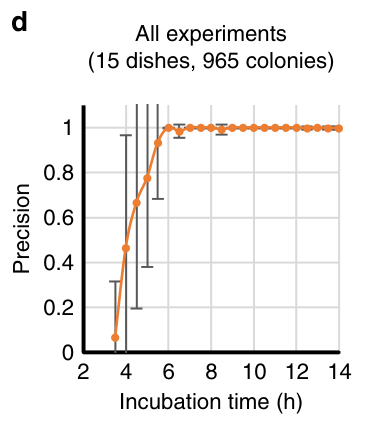
图标注15板、965菌落；早期TP很少时，少量FP即可让PPV明显下降。
作者报告约6 h后接近100%，7 h后维持99.2–100%；这不是检测灵敏度达到100%。
图使用precision=PPV。原文称量化false positive rate，但两者数学分母不同，不能把1−PPV当作FP/(FP+TN)。
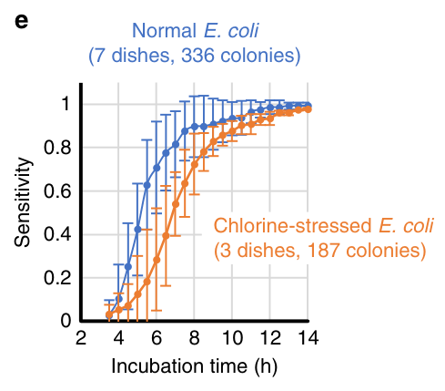
常规E. coli：7板、336菌落；受氯应激E. coli：3板、187菌落。
橙色曲线相对蓝色约延迟2 h。图支持这组条件下的出现时间差，不能概括所有应激类型。
固定早读时刻会更易漏掉延迟生长的样本。本页讨论测量偏差，不提供应激处理步骤。
正文与Fig.4d称15板、965菌落；但Fig.4a–c为339+336+280=955菌落。
Fig.5a–c也沿用339、336、280。两套总数差10，本文未给出解释，不能擅自修正。
教学保留原值，并按每一图实际分母解读。重复板属于实验单元；单板多个菌落并非全都统计独立。
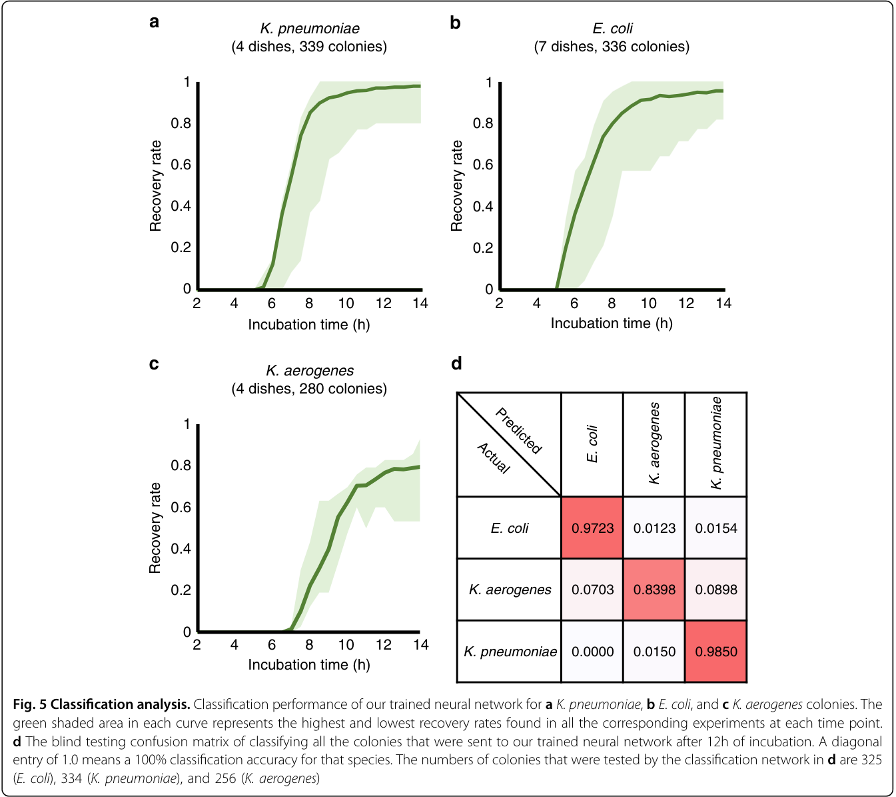
a–c按终点全部菌落作分母；d仅按12 h送入分类器的菌落作分母。两种问题不能互换。
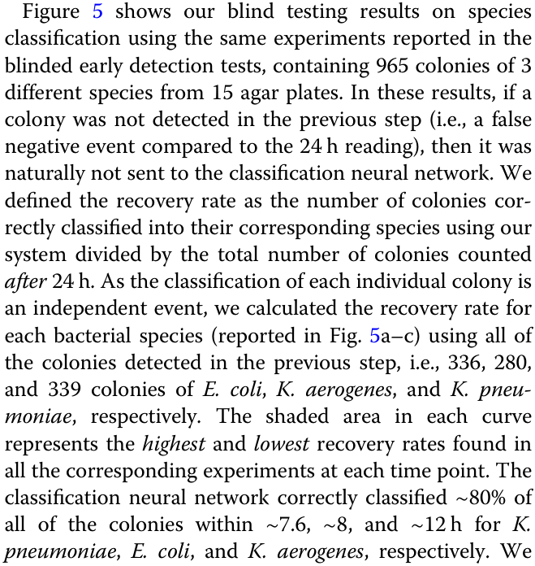
恢复率=正确分类菌落数/24 h终点总菌落数。没有被检测到的菌落自然不能被正确分类。
因此系统恢复率≤检测灵敏度；条件分类准确率只评价已经进入分类器的对象。
图中绿色阴影是各次实验最高/最低恢复率，不是标准差，也不是置信区间。
4板、339菌落；正文Results描述约7.6 h可正确分类约80%的终点菌落。
横轴为培养时间，纵轴为恢复率；阴影范围反映不同实验板之间差别。
恢复率饱和不等于菌落停止生长；只是被发现且被正确分类的终点菌落比例趋于稳定。
7板、336菌落；正文Results描述约8 h可正确分类约80%的终点菌落。
横轴为培养时间，纵轴为恢复率；阴影范围反映不同实验板之间差别。
E. coli的80%时刻在Results写约8 h、Discussion写8.8 h，教学保留该文本差异，不合并成一个精确数。
4板、280菌落；正文Results描述约12 h可正确分类约80%的终点菌落。
横轴为培养时间，纵轴为恢复率；阴影范围反映不同实验板之间差别。
恢复率饱和不等于菌落停止生长；只是被发现且被正确分类的终点菌落比例趋于稳定。
行是真实类别，列是预测类别；每行和约1。对角线：E. coli 0.9723、K. aerogenes 0.8398、K. pneumoniae 0.9850。
送入分类的分母分别325、256、334，共915。它小于终点分种总数955；不能用915替换整个独立测试分母。
K. aerogenes错分到另两类的比例为0.0703/0.0898，保留了较弱类别。
教学核算：325×0.9723≈316，256×0.8398≈215，334×0.9850≈329，约860/915≈94.0%。
这是按原图四位小数反算的近似微平均，仅作读表演示；原始整数预测表未提供。
按样品/平板阳性与阴性判定的临床或环境诊断灵敏度，不可由菌落级矩阵直接推出。
a 预培养，b 无预培养，c 空白，d低浓度不同总时间；所有面板随后放大。
横轴由Colilert比较得到的起始浓度CFU/L，纵轴为平台检出的CFU数；颜色编码5–14.5 h总测试时间。
在有预培养条件下，平台计数随总测试时间增加；灰虚线y=x用来比对数值。
这里CFU count与初始CFU/L并非同一量纲：以1 L样品为背景且经过生物扩增，不能把斜率直接叫回收率。
增加计数来自扩增与出现时间共同作用，并非每个初始细胞保持一对一菌落对应。
局部放大显示约0–20 CFU/L范围。水平误差反映比较浓度的变化，不能忽略x轴不确定性。
最低浓度约1 CFU/L样本在8.5 h检出2 CFU、9 h检出12 CFU，为正文报告值。
这些时刻含预培养、浓缩和时序成像；“9 h检出”不等于9 h直接无培养成像。
无预培养时，即使起始浓度更高，转入成像平板的计数仍低。作者归因于容器到平板的低转移率。
这说明灵敏度受上游回收率约束：更好的成像或分类不一定能补回没有进入视场的目标。
须与Fig.6a一起报告；不能只引用约1 CFU/L并省略其预培养前提。
三块无菌空白板，5–14.5 h平均计数<1；作者用μ+3σ得到约2 CFU/test阈值。
μ是空白计数均值，σ是标准差；该阈值用于区别背景，不等于95%检出概率定义的LOD。
仅3个空白重复，且计数非连续高斯变量；跨批次空白与稳定性还需额外验证。
8.5、9、10、11、12 h均保留：橙虚线为空白均值+3σ，灰虚线为y=x。
8.5 h时文中给LOD约11 CFU/L；≤9 h时达到约1 CFU/L。时间差会改变最低可分辨浓度。
两图横轴为初始浓度CFU/L，纵轴为CFU count，共享轴名见前页完整图。须同时看空白阈值与低浓度点。
“8.5 h最低浓度检出2 CFU”处于阈值附近，不应改写成该时刻已稳定达到1 CFU/L的LOD。
后三图横轴为浓度CFU/L，纵轴为CFU count，共享轴名见完整Fig.6d。计数并非对浓度严格单调。
在这些例子中重复间浓度不确定性和低数计数波动可见；不能将折线插值当作连续校准曲线。
图支持本文测量条件下的早期检测，不是自然水样所有背景下的定量标定。
灰色Colilert、黄色/红色平板计数、绿色成像法。用于核对取样体积、终点与时间，不作操作教程。
灰色分支是比较方法，不是本平台的早期成像输出。终点依据可见光/紫外观察，不是逐菌落的时序全息图。
原图把该分支终点标为18 h；总时间的比较应从同一计时起点出发，而非只比较相机曝光。
Table S1对该方法使用CFU/100 mL脚注。取样、稀释与读出链不同，不能把表数值直接当CFU/L或直接等同平板计数。
红色与黄色两路表示不同平板条件；共同输出是终点可见菌落计数，不是三类网络概率。
原图将该平板比较终点标为24 h。Fig.4/5的P另指相应成像平板的终点真值，不自动等于这些方法间比较计数。
Table S1平板列脚注为CFU/0.1 mL。不能忽略原始样品等效体积；本页只解释比较结构，不将图转写为操作步骤。
绿色分支在无透镜平台成像前包含大体积样品处理与预培养；这不是把原始稀水样直接放在相机上识别。
原图预培养阶段为5 h，随后才进入平板时序成像。约1 CFU/L、≤9 h的结果必须包含这段时间与上游回收。
共享输入为同类来源菌液，但三条检测链的体积与读出机制不同。用它比较测量分母与总时间，不推荐执行参数。
A为37.9±5.6 CFU/L，B为160±21.3 CFU/L。每组包含a1/a2无预培养与b1/b2预培养。
起始参考浓度37.9±5.6 CFU/L。a1/a2为无预培养的膜侧/转移平板；b1/b2为预培养后的对应观察。
同为总培养24 h，预培养组包含5 h液相阶段与19 h后续阶段，不能把其平板阶段与24 h组直接等同。
照片支持转移损失与扩增必要性；不从照片重新数菌落或推导未给出的精确回收率。
起始参考浓度160±21.3 CFU/L。a1/a2为无预培养的膜侧/转移平板；b1/b2为预培养后的对应观察。
同为总培养24 h，预培养组包含5 h液相阶段与19 h后续阶段，不能把其平板阶段与24 h组直接等同。
照片支持转移损失与扩增必要性；不从照片重新数菌落或推导未给出的精确回收率。
a 原始全息强度；b 数字回传；c 放大区与四条强度剖面。保留标尺和线宽标签。
同一测试靶从离焦全息图变成数字回传后的线条图案；变化来自传播计算而非添加真实空间信息。
a/b的0.5 mm尺度与c局部微米尺度不同。光学分辨率应由可分辨结构检验，而非只列传感器像素。
测试靶性能不能自动等同为浑浊培养基、密集菌落或所有深度的实际分辨率。
原图线宽标为3.91、3.48、3.10 μm，①–④对应局部剖面；横轴position单位μm。
作者据此给约3.5 μm半节距分辨率，接近4×/0.1 NA量级。
线对可分辨性不意味着能清楚分开单个小细菌；本文的识别对象是增长后的微菌落。
a 镜头显微镜拼接；b 无透镜图；c 深部A与表面B的连续观察，两者轴向相隔约2.17 mm。
a与b均为24 h结果，方框A/B在两幅图中对应两处菌落，b标尺5 mm。
镜头图出现拼接和聚焦相关视觉差异；无透镜单次全息测量允许数字再聚焦。
这是示例性对照，不是跨全部菌落的轴向定位误差统计，也没有证明任意厚浑浊组织适用。
上行A标为z=2170 μm，下行B为z=0 μm；时间从11.0至14.5 h、间隔30 min，标尺300 μm。
同一深度位置的菌落随时间增长，说明不同深度目标可由数字聚焦追踪；不能把纵向两行理解为两个波长。
“大观察深度”与“精确三维层析重建”不同，本文未给出完整体积折射率反演。
左图计数，右图每组三次平板照片；这些结果说明样品回收可限制仪器读出，非操作优化教程。
三组平均计数在图上为41.0±5.71、31.3±3.29、33.0±5.71 CFU/L；黄色参考区为加标计数范围。
三色柱为三个样本；紫色表示平均和标准差。回收计数未等于起始计数，且存在重复波动。
这里不将组间差异称为显著，也不把所示条件作为读者执行的操作建议。
每行是一组条件，每行三张对应三次样本观察；它们为左侧计数提供图像背景。
这些是上游回收验证，不是神经网络独立测试，也不是分类混淆矩阵的样本。
原文未说明这三次为独立制备批次还是同一来源分取；不擅自归为生物学重复。
A–F为原图六种时间/接触条件，纵轴是bacteria transfer rate (%)。所有条件都远未达到100%。
误差棒跨越范围较大；本文未在图注清楚定义其统计类型，也未给出显著性检验。
保留该失败边界：算法只看见成功转入成像面的对象。本页不提取或推荐操作参数。
8行样本，三种方法各含R1–R3、平均与标准差；原脚注分别为CFU/100 mL和CFU/0.1 mL，不能混用。
Colilert列脚注为CFU/100 mL；两种平板列为CFU/0.1 mL。R表示replicate sample。
表中数值相近不意味着未换算浓度相同；其制样/稀释链不同，须追溯样品等效体积。
低计数一行出现<1；不是零。该行Colilert平均值对<1的处理未在表中交代，应保留不确定性。
两种平板分别为TSA与ECC。平均值与SD均来自表内三次重复，列名与单位需一起引用。
对低数样本，少数计数的变化会产生较大相对误差；本表并非每个浓度都具备精确连续真值。
三种方法间没有在此表给出一致性界限、回归或显著性检验，因此不宣称计数可完全互换。
1.5 min与128 min为作者给定配置下比较；后者包括机械轴向聚焦条件，不能当作所有明场设备的实测通量。
Nᵢ=α·FOV·r²/δ²。FOV是面积，δ是半节距分辨率，r为每方向数字采样因子。
本文令r=2；全息幅度与相位按α=2计，明场按α=1计。面积与δ²必须统一单位。
Nᵢ是作者定义的有效像素量，不是相机原生像素或独立数据的实验证明。
依据作者参数计算：全息FOV≈3491 mm²，δ≈0.0035 mm，α=2、r=2。
Nᵢ≈2×3491×4/(0.0035)²≈2.28×10⁹，未能直接复得Table S2的570 million。
若r=1得到≈570 million。明场同样用r=1约217 million，表为435 million；具体参数取值口径未交代，不擅自替作者修补。
242 tiles/plate，87 s；原始面积通量约49 cm²/min。每边约30%重叠后，有效通量约24 cm²/min。
作者每30 min采一次，单次处理约20 min。扫描87 s不代表每87 s获得完整检测结果。
>50 cm²/min及GPU带来>10倍计算加速是作者展望，非本文已完成的测量。
Table S2：明场4×/0.1 NA，每图14.4 mm²；全息每图29.4 mm²。两者扫描总面积并不完全相同。
明场观察深度3000 μm、聚焦精度20 μm；全息表列>20,000 μm观察深度。
128 min为这些设置下的估算。没有统一相机、运动台、自动聚焦和算法的公平实测竞赛，不能普遍宣称快85倍。
作者证明：在所测加标水样、培养介质和三类菌中，时序全息成像可提前发现微菌落，并用另一网络分类。
独立板测试支持早期检测/分类；预培养结合回收过程支持约1 CFU/L、≤9 h的实验结果。
边界包含晚生长、转移损失、拥挤菌落、中央50 mm有效区域，以及分母和通量公式的原文不一致。
该工作提供“培养依赖、无额外光学标记、时空形态、数字聚焦、大视场”的方法实例。
与核酸、免疫或光谱方法比较时，应分别列活性指示、浓度分母、样品体积、总时间与前处理依赖。
这里的活性由形成可增长菌落指示；对可存活但不可培养状态、病毒、真菌或未知种并无本论文验证。
可迁移思路：把采集周期、空间采样、背景稳定性和判别时间窗联合设计；利用变化抑制静态背景。
这是综合推断。本文没有验证拉曼时间特征、DMD编码、光谱导数或用户未来装置的性能。
若迁移到另一模态，需重新定义信号形成模型、噪声、样品分母和独立批次测试，不能直接搬用网络准确率。
原文说明数据和代码可向通讯作者合理请求；并未提供可直接运行的公开复现仓库。作者披露相关专利申请。
主文和附录原文件保持不变，截图只裁边；中文解释与教学算例单独标示。
本稿为AI辅助教学资料，未替代人的科学审查。制作参考Scientific Agent Skills（Kassis等，2026，arXiv:2609.00065），不将其作为实验依据。